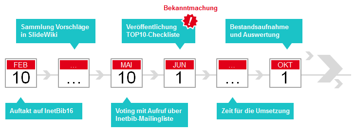

10 Schritte für mehr Openness in Ihrer Bibliothek
Hier wird aus einer Reihe von Vorschlägen über die praktikabelsten und effektivsten Schritte für mehr Openness in Bibliotheken abgestimmt. Die TOP10 werden anschließend als "Openness Checkliste" bekanntgemacht.
Hintergrund
Bibliotheken stehen traditionell für den freien Zugang zum Wissen. Dieses Prinzip erlebt in der digitalen Welt mit Open Access, Open Source und Open Data seit Jahren eine Renaissance. Kaum eine Bibliothek, die sich nicht öffentlich dafür einsetzt. Und dennoch mangelt es oft an der nötigen Konsequenz, denn BibliothekarInnen werben beispielsweise am Campus für Open Access, publizieren aber selbst oft genug noch in Zeitschriften, die nicht unter einer freien Lizenz stehen.
Auf der Inetbib-Tagung in Stuttgart am 10.2.2016 wurden im Rahmen eines Vortrags (HTML-Version | Print-Version auf Dokumentenserver) 10 Vorschläge präsentiert und zur Beteiligung aufgerufen. Daraufhin sind insgesamt 22 Vorschläge zusammengekommen aus denen nun die besten 10 für die Checkliste ausgewählt werden sollen.
Credits
Folgende Personen haben bei Slidewiki oder Twitter mit Ideen und Kommentaren beigetragen
Olaf Brandt @olaf_brandt | Christian Hauschke @hauschke | Lambert Heller @lambo | Juliane Hochstein @exwima | Gerald Langhanke @zasterabad | Andreas Romeyke @Art1Pirat | Matti Stöhr @mattistoehr | Adrian Pohl @acka47 | Rudolf Mumenthaler @mrudolf | Philipp Zumstein @zuphilip
Zur Abstimmung
Die Abstimmung erfolgt bei einem externen Dienst. Bitte berücksichtigen Sie bei Ihrer Stimmabgabe auch die Erläuterungen der einzelnen Vorschläge.
Abstimmung (bei Pollmill) Erläuterung der Vorschläge (Slidewiki)Ergebnis der Abstimmung
| Nr. | Vorschlag | Zustimmung in % |
|---|---|---|
| 1 | MEETUPS IN DER BIBLIOTHEK Lerngruppen, die sich auf Plattformen wie www.meetups.com organisieren, in die Bibliothek einladen, unterstützen und mit ihnen ins Gespräch kommen |
56 % |
| 2 | KONTAKTSEITE MIT FOTOS Persönliche Ansprechpartner auf Webseiten der Bibliothek benennen und mit Gesicht zeigen (Alternativ Gruppenfoto) |
71 % |
| 3 | OPEN ACCESS SEMESTERAPPARAT In einem Pilotprojekt mit einem Schwerpunktbereich der Uni gemeinsam |
77 % |
| 4 | LIZENZRECHTE FÜR TEXT MINING 1. Bei Neuverhandlung und Verlängerung von Lizenzverträgen das Recht auf Text Mining mit verhandeln. 2. The Hague Declaration von der Institution unterschreiben lassen |
80 % |
| 5 | KATALOG MIT SCHEMA.ORG Bibliothekskatalog mit Vokabular von schema.org auszeichnen |
66 % |
| 6 | SELBST NUR OA PUBLIZIEREN 1. Interne Open Access Policy für die Bibliothek verabschieden, die über die OA-Policy der Universität hinausgeht. 2. Nur noch in Medien publizieren, begutachten und Herausgeberschaften übernehmen bei denen der Inhalt ohne Zeitverzug Open Access bereitsteht (mindestens als Preprint, besser als |
84 % |
| 7 | WORKSHOP MIT NUTZERINNEN Workshop, Umfrage oder Wettbewerb mit NutzerInnen der Bibliothek zur Verbesserung der Dienstleistungen durchführen |
78 % |
| 8 | GUTACHTEN MIT OPEN PEER REVIEW Gutachten für Zeitschriften und Förderlinien mit Open Peer Review schreiben |
61 % |
| 9 | PROJEKTANTRÄGE VERÖFFENTLICHEN Projektanträge möglichst vollständig veröffentlichen, um Nachvollziehbarkeit zu fördern und Neulingen Einblick ins |
75 % |
| 10 | WIKIPEDIA UNTERSTÜTZEN 1. Wikipedia-Eintrag der Bibliothek verbessern. 2. Wikipedia-Event (z.B. im Rahmen der Open Access Week) veranstalten |
77 % |
| 11 | BLOGS, VIDEOS, ETC. AKTIV NUTZEN Ausprobieren, in Blogposts, Videos u.ä. von eigenen Arbeitsthemen zu berichten |
75 % |
| 12 | KATALOG ANREICHERN MIT BEACON Erstellung und Einbindung von BEACON-Dateien in Katalogen/Datenbanken |
62 % |
| 13 | ÖFFENTLICHE WEBINARE Offenes Webinar zu einem Fachthema anbieten mit DFN-Videokonferenz-Service (ggf. Veröffentlichung auf YouTube oder anderswo) |
72 % |
| 14 | OPEN DATA POLICY FÜR DIGITALISATE Open Data Policy für eigene Digitalisate (bzw. für eigenen Content) und für Metadaten |
87 % |
| 15 | OPEN SOURCE SOFTWARE EINSETZEN 1. Open Source Software bereitstellen und/oder Software offen entwickeln. 2. Open Source Software einsetzen. 3. Neben/Anstatt Campuslizenzen auch zu Open Source Software beraten. 4. Dokumentation, Übersetzungen, Fehler melden, gegenseitig helfen |
79 % |
| 16 | DOAJ UNTERSTÜTZEN Mitarbeiter/in als Freiwillige/n bei DOAJ mitarbeiten lassen |
59 % |
| 17 | FOTOS MIT CC-LIZENZ Fotos der eigenen Einrichtung (zumindest der Bibliothek, wenn möglich auch der Universität, der Stadt, ...) mit CC-Lizenz zur Verfügung stellen |
85 % |
| 18 | FABLABS EINLADEN Örtliche FabLabs / Makerspaces einladen, ihre Werkstücke im Foyer der Bibliothek zu präsentieren |
56 % |
| 19 | CRYPTOPARTY VERANSTALTEN In Kooperation mit dem lokalen Chaos Computer Club einen Workshop zur Verschlüsselung ( |
53 % |
| 20 | OA-POTENTIAL AUFDECKEN Open-Access-Potentiale von einzelnen WissenschaftlerInnen bei www.dissem.in recherchieren, diesen zur Kenntnis geben und Hilfestellung beim Upload in Repository der Hochschule anbieten |
80 % |
| 21 | OPEN SOURCE AUSSCHREIBUNGEN 1. Ausschreibungen so gestalten, dass Open-Source-Software berücksichtigt wird. 2. Über Alternativen in Verzeichnissen wie Foss4Lib informieren. |
74 % |
| 22 | SCHULUNGSMATERIALIEN VERÖFFENTLICHEN Präsentationsfolien, Schulungsmaterialien und Blogbeiträge unter freien Lizenzen zur Nachnutzung bereitstellen |
89 % |
Ergebnisse bei Pollmill